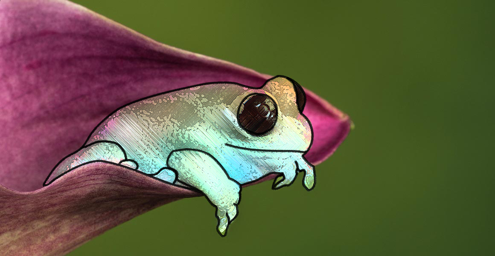

Portfolio
Here is a list of projects I've done in the past. Feel free to check them out, or you can peruse around my about page and my resume. Thanks for stopping by!
-
Luminesce

A retro game / endless platformer I created. Enemies used AI and I created infinite random generation of the playing space as well as my own physics engine.
-
Autobalancing AVL Tree

Binary Search Trees with the balanced property, except for upon deletion or insertion, these will automatically re-balance themselves. In doing so, they also maintain the order of elements, allowing for log(N) searches.
-
Red Cloud
Utilizing my knowledge of masking in art (such as with photoshop), I made a game called red cloud with special vfx. The game was an endless survival game, in which you could combo enemies with a sword and take the shape of a red, high-damage "cloud" for a brief time. Enemies could also take such a form upon death, but would be green and upon collapsing would take away a percentage of the player's health depending on the percent overlapped by their cloud on the player's.
-
CSS VFX
I often like to mess around with CSS and other languages to create interesting visual effects and animations. This showcases some freezframes of some "spinner" objects I have made with pure CSS.
-
Melodies & Music

In my free time I come up with melodies on guitar and other tracks that could be used as simple soundtracks in games.
-
Photoshop
As mentioned with CSS vfx, I have gotten quite familiar with photoshop and other similar photo-editing softwares. I use it to create art for a variety of things and to sometimes just create.